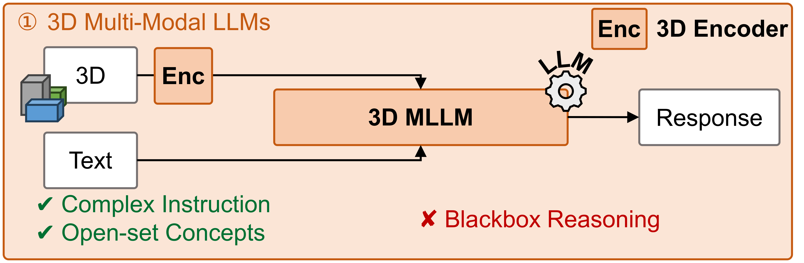

Abstract
From rigorous neuro-symbolic reasoning to open-world 3D understanding.
Current 3D spatial reasoning methods face a trade-off: neuro-symbolic 3D learners provide interpretable compositional programs but remain tied to closed-set vocabularies, while end-to-end 3D MLLMs can handle free-form language yet often reason as opaque pattern matchers.
APEIRIA bridges these paradigms by distilling verified symbolic execution traces into natural language chain-of-thought. A three-stage curriculum first grounds 3D object features to the LLM to teach it to see in 3D, then injects systematic program-style reasoning via CoT-SFT, and finally extends the learned patterns to open-set concepts and complex nested instructions through CoT-RL.
Method
Progressive curriculum-based reasoning distillation.
APEIRIA learns to see, think, and adapt through a simple-to-complex progression that preserves the clarity of symbolic programs.

Perception Alignment
Teach the 3D MLLM to recognize basic 3D scenes and objects by grounding categories, attributes, locations, and captions before program distillation.
Symbolic Reasoning Injection
Serialize neuro-symbolic programs into CoT traces that expose plans, object IDs, locations, and step outputs.
Open-Set Generalization
Use GRPO with format and soft grounding rewards to adapt reasoning to real-world language and deeper nesting.
Results
Strong spatial reasoning with transparent reasoning.
APEIRIA improves over prior neuro-symbolic methods and competitive 3D MLLMs on ScanRefer and Multi3DRefer, with modular enhancement pushing performance further.
ScanRefer Acc@0.25
60.5
APEIRIA with modular enhancement
ScanRefer Acc@0.5
53.2
Best reported in the paper table
Multi3DRefer F1@0.25
60.9
Full modular enhancement
Multi3DRefer F1@0.5
55.2
Full modular enhancement
| Method | Output | ScanRefer Acc@0.25 |
ScanRefer Acc@0.5 |
Multi3DRefer F1@0.25 |
Multi3DRefer F1@0.5 |
|---|---|---|---|---|---|
| Video-3D LLM | Head | 58.1 | 51.7 | 58.0 | 52.7 |
| Inst3D-LMM | Text | 57.8 | 51.6 | 58.3 | 53.5 |
| APEIRIA | Text | 58.4 | 51.2 | 59.2 | 53.8 |
| APEIRIA + modular enhancement | Text | 60.5 | 53.2 | 60.9 | 55.2 |
Reasoning Behavior
The model exposes its spatial verification path.
CoT-RL encourages APEIRIA to preserve a planning-then-execution structure while extending beyond fixed program templates. The model can filter open-vocabulary descriptors, compose multi-condition relations, and summarize grounded object IDs.
Object IDs
3D positions
Relation checks
Instruction
Find the vase left to the computer.
Provide its ID, position, and dimensions.
-
01
Plan
Examine all objects; find vases; find computers; check which vase is left to a computer.
-
02
Scene
Object 0(vase), 1(vase), 2(bottle), 3(rug), ...
-
03
Filter
Vase 0 (1.15, 6.09, 1.33) Vase 1 (6.66, 5.41, 0.29) Computer 4 (2.34, 3.50, 0.75) Computer 11 (1.44, 4.04, 3.10) -
04
Relate
- Vase 0 is left to Computer 4.
- Vase 0 is above and near Computer 11.
- Vase 1 is right to and near Computer 4.
- Vase 1 is right to, in front of and far from Computer 11.
-
05
Answer
Object 0: position (1.15, 6.09, 1.33), size 0.86 x 0.99 x 1.79.
Modularity
External perception and plans can lift the reasoning performance.
As APEIRIA keeps planning and execution decoupled, the same reasoning scaffold can accept a stronger planner or a stronger scene parser at inference time. Claude Opus plans help slightly, while better perception from SegDINO3D drives the larger gains, suggesting the current bottleneck is mostly visual rather than planning.
Modularity Analysis
Inference-time module replacement
| Source | ScanRefer | Multi3DRefer |
|---|---|---|
| Self plan + perception | 58.4 | 59.2 |
| Claude 4.5 Opus plan | 58.6 | 59.5 |
| SegDINO3D perception | 60.4 | 60.6 |
| Oracle labels | 61.3 | 61.3 |
| Full modular enhancement | 60.5 | 60.9 |
Citation
BibTeX
Please consider citing APEIRIA if you find this work helpful to your research.
@inproceedings{mo2026,
title={Distilling Neuro-Symbolic Programs into 3D Multi-modal LLMs},
author={Mo, Wentao and Liu, Yang},
% booktitle={International Conference on Machine Learning},
year={2026}
}